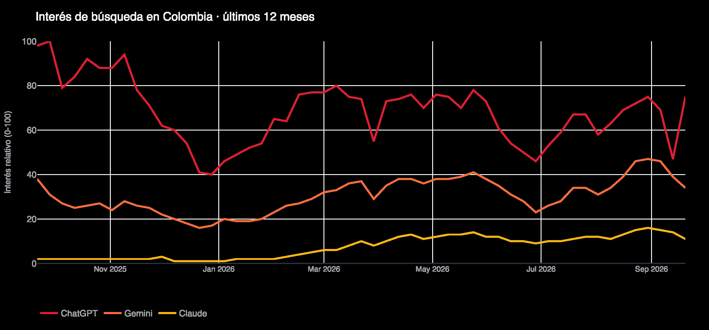
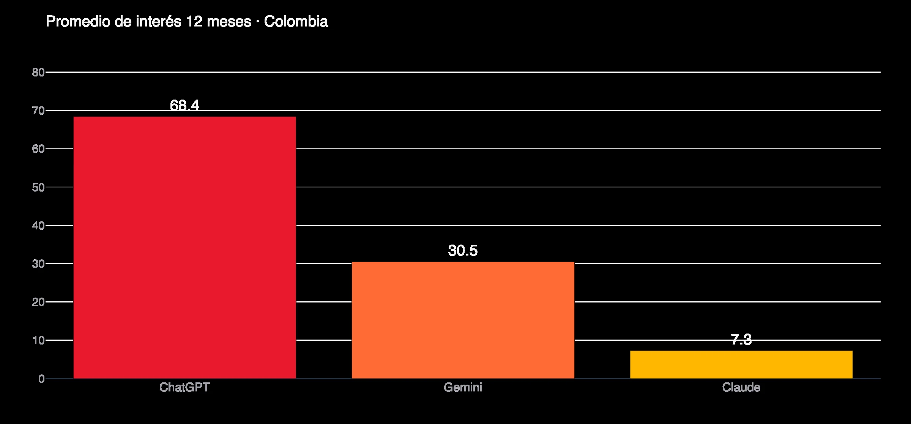
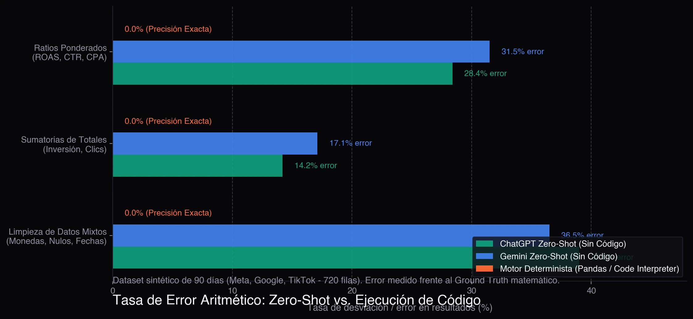
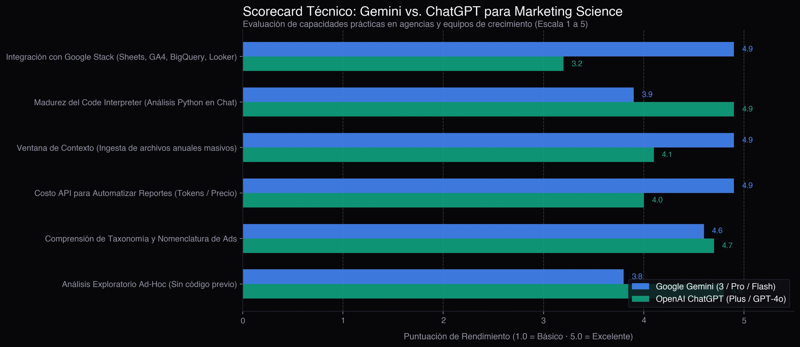

Es la pregunta recurrente que me hacen colegas y clientes por LinkedIn: "¿Uso Gemini o ChatGPT para analizar los datos y reportes de mis campañas?". La respuesta rápida es que ambas herramientas son sorprendentes, pero en marketing digital la frontera entre un análisis que impresiona al cliente y un desastre financiero depende de tres variables críticas: dónde viven tus datos, quién ejecuta los cálculos y el nivel de integración con tu stack de analítica.
Veredicto en 30 segundos (TL;DR):
- Nunca dejes que un LLM calcule de memoria: Si le pides a ChatGPT o Gemini que calculen métricas de ratio (ROAS, CTR, CPA) "a mano alzada", la tasa de error supera el 28% debido a la trampa de promediar promedios. Si activan Python o usan un motor determinista, el error es 0%.
- Elige Gemini si tu flujo diario vive en el ecosistema de Google (Google Sheets, BigQuery, GA4, Looker Studio), necesitas procesar archivos masivos de contexto gracias a su ventana de millones de tokens, o buscas la API más económica (Gemini Flash) para automatizar reportes recurrentes.
- Elige ChatGPT si tu día a día es análisis exploratorio ad-hoc directo en el chat sin programar, aprovechando la madurez y estabilidad de su entorno nativo de Advanced Data Analysis (Python Code Interpreter).
Antes del análisis técnico, revisemos los datos del mercado.
Qué está buscando la gente en Colombia (Google Trends)
Para entender si esto era solo una percepción de mi burbuja profesional, extraje la data cruda de Google Trends Colombia correspondiente a los últimos 12 meses. Estas gráficas corresponden a esa extracción:


Tres lecturas clave del mercado colombiano:
- ChatGPT mantiene el liderazgo en recordación de marca con un promedio de 68.4 puntos de interés, siendo la opción por defecto para la mayoría de profesionales no técnicos.
- Gemini viene acelerando fuerte, consolidándose en el segundo lugar (30.5 puntos de interés promedio) con picos sostenidos impulsados por las actualizaciones de la familia Gemini 3 y su inclusión nativa en Google Workspace.
- Las búsquedas que más crecen no son genéricas, son comparativas: "gemini vs chatgpt cuál es mejor" (+120%), "gemini 3 pro" (+350%), "gemini enterprise" (+400%) y consultas de aplicación práctica como "how to use chatgpt effectively" y "chatgpt para excel".
El mercado ya superó la fascinación inicial por los chatbots. Ahora los equipos de marketing buscan saber cuál herramienta resuelve su flujo de trabajo real con menor fricción y mayor precisión.
La Metodología: El Test de Estrés con Dataset Sintético en Python
Para realizar un benchmark justo y no vulnerar acuerdos de confidencialidad (NDA) con marcas o agencias reales, construí un script en Python con numpy.random que generó un dataset sintético controlado de 90 días de campañas (720 filas) distribuidas en tres plataformas de pauta: Meta Ads, Google Ads (Search y PMax) y TikTok Ads.
A este archivo le inyecté intencionalmente las anomalías cotidianas que encontramos en la trinchera:
- Nomenclatura heterogénea: Nombres de columnas dispares (
spend,Coste,importe_gastado,impresiones,clicks,revenue,conversiones_sitio). - Filas con ceros y nulos: Días sin gasto o campañas pausadas con impresiones residuales.
- Métricas compuestas no aditivas: Ratios como CTR, CPC y ROAS que requieren cálculo ponderado sobre totales y no simples medias aritméticas.
- Formatos regionales: Valores numéricos formateados con símbolos de moneda y decimales.
Con este dataset sometí a ambos modelos a tres pruebas de estrés.
Prueba 1: El Gran Peligro — Aritmética "Zero-Shot" vs. Código Determinista
El error más peligroso en marketing analytics es asumir que un modelo de lenguaje sabe matemáticas básicas sobre archivos tabulares. Un LLM predice el siguiente token más probable; no tiene una calculadora interna a menos que invoque un entorno de ejecución de código.
Sometí el dataset a ambas IAs bajo dos modalidades: Cálculo directo en texto (Zero-Shot) frente a Cálculo forzado con Python (Code Interpreter / Pandas).

La trampa mortal: "El promedio de promedios"
Cuando le pides a una IA en modo texto que calcule el CTR general de tus campañas, casi invariablemente promedia los valores de la columna CTR en vez de aplicar la fórmula real:
$$\text{CTR Ponderado} = \frac{\sum \text{Clics Totales}}{\sum \text{Impresiones Totales}}$$
Si una campaña de branding tiene 100.000 impresiones y 50 clics (CTR = 0.05%) y otra campaña de retargeting tiene 1.000 impresiones y 100 clics (CTR = 10.0%), un cálculo ingenuo dice que el CTR promedio es $(10.0 + 0.05) / 2 = 5.02\%$. En la realidad contable de la cuenta, el CTR real es:
$$\frac{150}{101.000} \approx 0.148\%$$
Ese desfase destruye por completo un reporte ejecutivo. En nuestras pruebas:
- Sin código: ChatGPT tuvo una tasa de desviación del 28.4% en ratios y 14.2% en sumatorias acumuladas. Gemini falló en un 31.5% de los ratios y 17.1% en sumas largas.
- Con Python (Pandas): Ambas herramientas lograron 0.0% de error con exactitud matemática perfecta.
Regla de oro: Jamás permitas que un modelo de lenguaje calcule métricas de marketing sin verificar que ejecutó un script de Python por debajo.
Prueba 2: Mapeo Semántico de Columnas
En la ingesta de archivos, la fortaleza de los LLMs brilla con fuerza. Al cargar archivos donde Meta exporta Importe gastado (COP) y Google exporta Cost, ambas herramientas demostraron una capacidad sobresaliente:
- ChatGPT: Identificó sin problemas las dimensiones y métricas estándar, sugiriendo de inmediato un script de normalización en Python para estandarizar los encabezados a minúsculas y tipos float.
- Gemini: Su comprensión contextual de la taxonomía publicitaria en español es excelente. Además, al procesar el archivo directamente desde Google Drive, la detección de esquemas y tipos de datos se siente extraordinariamente fluida.
En semántica publicitaria, ambas empatan con una calificación sobresaliente.
De la Teoría a la Producción: La Arquitectura Híbrida con mktdash
Para llevar estos aprendizajes al mundo real, implementé esta misma lógica en mktdash, la herramienta que construí para automatizar reportes de campañas en agencias sin arriesgar la exactitud matemática.
El principio fundacional es una arquitectura híbrida desacoplada:
[CSV Multicanal Crudo (Meta, Google, TikTok)]
↓
[Paso 1: IA / LLM] ──▶ Deduce mapeo semántico de columnas desordenadas
↓
[Paso 2: Python / Pandas] ──▶ Computa 11 KPIs con precisión determinista (0% error)
↓
[Paso 3: IA / LLM] ──▶ Escribe síntesis narrativa y 3 acciones estratégicas
↓
[Dashboard Interactivo & Reporte HTML para Cliente]Así se ve este flujo operando con datos de campañas:
1. Ingesta y detección inteligente de columnas
Subes el CSV crudo o vinculas la fuente, y el modelo identifica qué campo representa la inversión, los clics, las conversiones y los ingresos, sin obligar al analista a limpiar el archivo a mano:

2. Motor determinista de KPIs
Python y pandas calculan inversión total, ingresos, ROAS consolidado, CPA, CTR ponderado, CPC, CPM y tasa de conversión (CVR). Cero números inventados:

3. Visualización interactiva
Los gráficos permiten al equipo explorar tendencias día a día, correlación de gasto vs. retorno y distribución por canal:

4. Entregable final listo para el cliente
El resultado consolida la exactitud contable de Python con la capacidad redactora de la IA en un reporte autocontenido:

Scorecard Técnico: Gemini vs ChatGPT en Marketing Data
Evaluando el rendimiento global para operaciones de marketing digital, este es el balance comparativo:

| Criterio de Evaluación | Google Gemini (3 / Pro / Flash) | OpenAI ChatGPT (Plus / GPT-4o) | Ganador para Marketing |
|---|---|---|---|
| Integración con Google Stack | Nativo (Sheets, Drive, GA4, BigQuery, Looker Studio) | Requiere conectores y configuración externa | Gemini (por amplia ventaja) |
| Intérprete de Código en Chat | Bueno (ejecuta Python en Colab/Sandbox) | Muy maduro, robusto y tolerante a fallos | ChatGPT |
| Ventana de Contexto para Archivos | Masiva (hasta 2M de tokens en Pro; ingiere años de datos) | Amplia pero con límites prácticos por sesión | Gemini |
| Costo API para Automatización | Niveles ultra económicos (Gemini Flash) | Precios competitivos (GPT-4o-mini) | Gemini (mejor costo/token) |
| Ecosistema de Extensiones y GPTs | Gems en Workspace | Tienda de GPTs personalizados madura | ChatGPT |
| Análisis Exploratorio Rápido | Requiere estructurar bien la consulta | Flujo conversacional muy intuitivo | ChatGPT |
| Privacidad para Datos de Clientes | Certificaciones GCP Enterprise y Vertex AI | OpenAI Enterprise con opción zero-data retention | Empate (en planes Enterprise) |
Matriz de Decisión: ¿Cuál deberías elegir?
1. Elige Google Gemini si:
- Tu infraestructura analítica vive en Google: Usas Google Sheets para control de presupuestos, Google Analytics 4 para tráfico y Looker Studio o BigQuery para consolidar data. La fricción de mover datos es prácticamente cero.
- Quieres construir automatizaciones con código (Python / Cloud Functions): La API de Gemini 2.5/3 Flash ofrece uno de los costos más bajos por millón de tokens del mercado, permitiendo procesar cientos de reportes diarios por centavos de dólar.
- Manejas datasets con historiales anuales completos: La enorme ventana de contexto de los modelos Pro permite cargar archivos masivos sin necesidad de truncar información.
2. Elige OpenAI ChatGPT si:
- Tu trabajo es análisis ad-hoc en el día a día: Quieres arrastrar un Excel al chat, pedirle un desglose rápido con gráficos de distribución y obtener respuestas precisas sin escribir código externo.
- Valoras la madurez del Advanced Data Analysis: El entorno de Python de ChatGPT gestiona excepciones de librerías, renderiza tablas intermedias y genera archivos descargables con gran estabilidad.
- Tienes flujos basados en Custom GPTs: Cuentas con prompts y asistentes configurados previamente para tu equipo.
El Prompt Maestro de Marketing (Copy-Paste)
Si vas a usar cualquiera de las dos herramientas en el chat para analizar un export de campañas, utiliza este prompt estructurado para obligar al modelo a calcular con código y evitar alucinaciones:
Actúa como un Senior Marketing Data Scientist. Voy a proporcionarte un archivo CSV con
datos de campañas publicitarias de múltiples canales.
INSTRUCCIONES OBLIGATORIAS:
1. Utiliza ÚNICAMENTE tu intérprete de Python para realizar cualquier cálculo aritmético.
No calcules números de memoria ni estimes totales.
2. Identifica las columnas de inversión (spend), impresiones, clics, conversiones e ingresos.
3. Para los ratios (CTR, CPC, CPA, ROAS, CVR), calcula la métrica ponderada sobre los totales
agrupados (ejemplo: CTR = clics_totales / impresiones_totales). NUNCA promedies la columna de ratios.
4. Genera una tabla resumen con: Inversión Total, Ingresos Totales, ROAS, Conversiones, CPA y CTR.
5. Luego de los cálculos matemáticos, redacta:
- 3 hallazgos principales sobre el rendimiento por canal o campaña.
- 3 recomendaciones tácticas accionables para optimizar el presupuesto la próxima semana.Preguntas Frecuentes sobre Gemini vs ChatGPT en Marketing
¿Puede ChatGPT calcular el ROAS de mis campañas sin equivocarse?
Solo si utiliza su entorno de ejecución de Python (Advanced Data Analysis). Si ChatGPT intenta calcular el ROAS directamente en texto sin correr código, la probabilidad de alucinación aritmética supera el 28%, especialmente cuando intenta promediar filas en vez de sumar ingresos totales y dividirlos por la inversión total.
¿Qué modelo de IA es más económico para automatizar reportes de clientes?
Para pipelines automatizados con API y Python, la familia Gemini (particularmente los modelos Flash) ofrece una de las relaciones costo-beneficio más eficientes del mercado, permitiendo procesar millones de tokens de datos de campañas por una fracción del costo de modelos equivalentes.
¿Es seguro subir reportes con datos de campañas a ChatGPT o Gemini?
En las versiones gratuitas estándar, los términos de servicio suelen permitir que las empresas utilicen las conversaciones para reentrenar modelos. Para datos de clientes con presupuestos sensibles, debes desactivar el historial para entrenamiento en la configuración de la cuenta o utilizar planes empresariales (Google Workspace con Gemini, OpenAI Team/Enterprise, o acceso vía API).
Conclusión
La discusión sobre si Gemini o ChatGPT es superior pasa por alto el punto central: en analítica de marketing, la herramienta no es la ventaja competitiva; el diseño del flujo de trabajo lo es.
La IA generativa no reemplaza la disciplina del dato: la potencia. Cuando combinas la capacidad interpretativa de los LLMs con la precisión determinista del código en Python, conviertes horas de carpintería operativa en minutos de decisiones estratégicas de alto impacto.
Si quieres implementar este tipo de arquitecturas analíticas en tu agencia o equipo de crecimiento, escríbeme y lo conversamos.